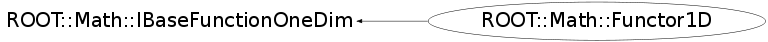

class ROOT::Math::Functor1D: public ROOT::Math::IBaseFunctionOneDim
Documentation for class Functor class. It is used to wrap in a very simple and convenient way multi-dimensional function objects. It can wrap all the following types: <ul> <li> any C++ callable object implemention double operator()( const double * ) <li> a free C function of type double ()(double * ) <li> a member function with the correct signature like Foo::Eval(const double * ). In this case one pass the object pointer and a pointer to the member function (&Foo::Eval) </ul> The function dimension is required when constructing the functor. @ingroup GenFunc
Function Members (Methods)
public:
| virtual | ~Functor1D() |
| virtual ROOT::Math::Functor1D::ImplBase* | Clone() const |
| ROOT::Math::Functor1D | Functor1D() |
| ROOT::Math::Functor1D | Functor1D(const ROOT::Math::Functor1D&) |
| ROOT::Math::Functor1D | Functor1D(void* p, const char* className = 0, const char* methodName = 0) |
| double | ROOT::Math::IBaseFunctionOneDim::operator()(double x) const |
| double | ROOT::Math::IBaseFunctionOneDim::operator()(const double* x) const |
| ROOT::Math::Functor1D& | operator=(const ROOT::Math::Functor1D& rhs) |
private:
| virtual double | DoEval(double x) const |
Data Members
private:
| auto_ptr<ROOT::Math::IBaseFunctionOneDim> | fImpl | pointer to base functor handler |
Class Charts
{kind=link}
{kind=link}
{kind=link}
{kind=link}

Function documentation
double DoEval(double x) const
Functor1D(const ROOT::Math::Functor1D& )
construct from a callable object with the right signature
implementing operator() (double x)
{}